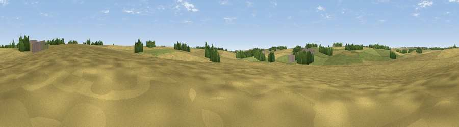

Fox Hill
#45921 in England · top 92% of its area beats it · near AnsteyWhere it is
The exact computed spot (TL 39644 31538). Click the marker for map links.
The view, rendered

A 360° render of this exact spot computed from the terrain model, tree cover and land cover — summer colours, afternoon light, calibrated against photographs of famous viewpoints. Real trees, hedges and buildings will differ in detail.
The panorama
Grey silhouette: terrain skyline in each direction (720 bearings, Earth curvature and refraction included). Dashed green: skyline with trees (+15 m) and buildings (+8 m) as obstacles. Blue strip: how far the ground is visible on each bearing.
Where the view opens
Wedge length = distance to the farthest visible ground on that bearing (vegetation-aware). Rings at 10, 25 and 50 km.
What fills the view
69% cropland · 25% grassland · 3% woodland · 2% built-up
Angular shares of the visible panorama (visual magnitude), not map area. Landscape diversity 0.35 (0–1 Shannon).
Key numbers
More beautiful places nearby
The staircase of upgrades: each row has a higher view potential than everything closer. Driving times are estimates from straight-line distance, calibrated against real road routing — check an actual route before setting out.
| Place | Direction | Drive | Score |
|---|---|---|---|
| Tire Hill | WSW · 5 km | ~10 min | 23.3 |
| Viewpoint near Barley | N · 7 km | ~15 min | 41.1 |
| Therfield Hill | NW · 9 km | ~17 min | 45.2 |
| Viewpoint near Heydon | NNE · 9 km | ~18 min | 50.0 |
| Viewpoint near Royston | NNW · 10 km | ~20 min | 56.6 |
| Viewpoint near Hexton | W · 27 km | ~43 min | 65.4 |
| Viewpoint near Church End | WSW · 40 km | ~60 min | 65.8 |
| Beacon Hill | WSW · 46 km | ~66 min | 74.1 |
51.96479, 0.03117 · source: osm peak · position refined by local search. Computed location — check access rights before visiting.